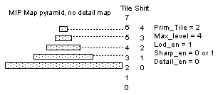
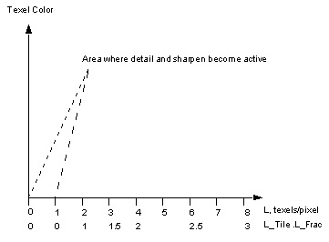
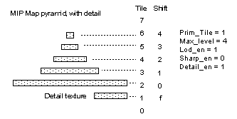
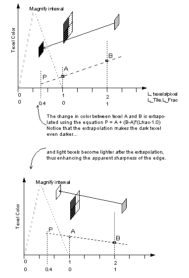

|
|
Tile Selection
Functionality
There are basically two ways to index into tile memory: explicitly via a user-defined tile number, or indirectly using a combination of the user-defined tile number and the level of detail (LOD) of the pixel.
In two-cycle mode, it is possible to access different tile descriptors in each cycle. The computation of tile indices for each cycle depends on several mode bits and is described in the following sections.
LOD Disabled
Table 1 Tile Descriptor Index Generation with LOD Disabled
LOD Enabled
With LOD enabled, the tile index is a function of the Level of Detail (LOD) of the primitive. LOD is computed as a function of the difference between perspective corrected texture coordinates of adjacent pixels to indicate the magnification/minification of the texture in screen space (texel/pixel ratio). The LOD module also calculates an LOD fraction for third axis interpolation between MIP maps. The combination of LOD-derived tile coordinates and fraction, a particular tile descriptor arrangement, and tri-linear filtering allows the implementation of MIP maps. Notice that MIP mapping is a specialized use of the general texture hardware. Other types of mappings are possible. The LOD calculation makes the following features (and maybe more) possible:
The LOD calculation depends on the following inputs:
The LOD calculation produces the following outputs:
The LOD per pixel is clamped to min_level. The LOD tile index is then calculated using the equation:
Tile descriptors are used both when loading a texture and when rendering a texture. This section discusses the selection of tiles when rendering. The use of tiles descriptors when loading textures in discussed in the Section 13.9, "Texture Loading."
With LOD disabled, the user specifies the texture tile for a primitive directly using the gSPTexture command. This tile number is inserted by microcode into the header for each subsequent primitive and is referred to as the primitive tile number. 2-cycle non-LOD mode can be useful for combining two arbitrary textures (morphing, etc.) The calculation of the tile descriptor index is straight forward when LOD is disabled:
Cycle
Tile Index
0
primitive tile
1
primitive tile + 1
The lod_en mode bit in SetOtherModes determines if tile indices are determined using Level of Detail (LOD) or from the primitive command directly.
level of detail@pixel (texels/pixel), derived per pixel
minimum LOD fraction clamp for sharpen or detail modes, from the SetPrimColor RDP command
number of MIP maps minus one, from the primitive via the gSPTexture command.
enable for detailed texture, from SetOtherModes RDP command
enable sharpen mode, from SetOtherModes RDP command
primitive tile number, from the primitive via the gSPTexture command.
enable for LOD calculation, from SetOtherModes RDP command
LOD fraction for 3rd axis interpolation
tile descriptor index into tile memory
l_tile = log2((int)lod_clamp)
So, for example, an LOD of 7.5 would be converted to an l_tile of 2. This index is clamped to max_level and then added to the prim_tile. For example, the tile arrangement for a MIP map with a prim_tile = 2 and max_level = 3 would be arranged as shown in the following table.
Table 2 Example of Tile Address and LOD Index Relationship
| Tile Address | LOD Index |
|---|---|
| 0 | — |
| 1 | — |
| 2 | 0 |
| 3 | 1 |
| 4 | 2 |
| 5 | 3 |
| 6 | — |
| 7 | — |
The l_frac is derived by dividing the clamped LOD by 2 l_tile . For example, an LOD of 7.5 would yield an l_frac of 0.875. The l_frac is modified depending on the mode bits detail_en and sharp_en. Note that the detail and sharpen modes discussed below are exclusive. If enabled simultaneously, special effects may result. If neither detail_en or sharp_en is true, then the l_frac is passed to the color combiner unmolested.
Sharpen and detail mode change the behavior of the tile index calculation when magnifying. The texture is magnified when you get so close to the primitive that one texel is being applied to many pixels, even using the highest resolution texture in the MIP map.
Table 3 Generation of Tile Descriptior Index witj LOD Enabled and Magnifying
| Cycle | Detail | Sharpen | !Detail & !Sharpen |
| 0 | prim_tile + l_tile | prim_tile + l_tile | prim_tile + l_tile |
| 1 | prim_tile + l_tile + 1 | prim_tile + l_tile + 1 | prim_tile + l_tile |
Table 4 Generation of Tile Descriptor Index With LOD Enabled and Not Magnifying
| Cycle | Detail | Sharpen | !Detail & !Sharpen |
| 0 | prim_tile + l_tile + 1 | prim_tile + l_tile | |
| 1 | prim_tile + l_tile + 2 | prim_tile + l_tile + 1 | prprim_tile + l_tile + 1 |
Also note that l_tile is clamped to max_level when at the coarsest level of detail.
MIP Mapping
An example of the tile arrangement for a MIP map is shown in the following figure.
Figure 13.7.1 MIP Map Tile Descriptors
|  |
To implement trilinear MIP mapping, the RDP must be in two-cycle mode. A tile is referenced in each of the cycles and linearly interpolated using the l_frac in the color combiner.
For more control of interpolation between two texture tiles a register prim_frac (0.8) is provided that can be used as an input to the color combiner. prim_frac is set by the SetPrimColor command.
Care should be taken in the off-line generation of the MIP maps. Depending on the filter used for generating the levels, the different levels can end up unaligned if not careful. For example, if using a simple box filter for generating the coarser levels, an offset of 0.5 should be added to the SL and TL of each level to insure that they align when laid on top of one another. Whether these or other offsets are necessary depends on the filter used. Typically higher order filters will result in higher quality MIP maps.
Another word of caution. In computer graphics, extremely high frequency textures are a bad thing. Going from black to white in one texel being the highest frequency. High frequency maps are more likely to alias (flicker) when edge on or far away. So when generating map data use common sense and possibly lower frequency texture data to avoid these problems.
Figure 13.7.2 Magnification Interval Relative to LOD
|  |
Detail Texture
Even with trilinear MIP mapping, textures can look blurry under magnification (that is, when 0.0 < LOD < = 1.0). One way of avoiding this is to use very large textures that contain high-frequency detail. But this would be expensive in Tmem.
Detail mode comes into play in magnification. The finest level of the base texture is combined with a (usually small) detail texture in such a way as to repeat the detail-texture over the base texture several times. A base-texel would, upon magnification, appear to contain four or more detail texels blended with the base-texel color, thus providing high-frequency information without having to sacrifice large amounts of Tmem. This can be used very effectively; for example, to provide motion cues when close to the terrain.
Detail texture mode is most effective in situations where the high-frequency information and overall hue are relatively consistent throughout the texture. To convert a high-resolution image into a low-resolution image (for the base texture) and a detail texture, follow this procedure:
A very effective and efficient implementation of detail texture involves use of the base texture itself as the detail texture but at a different resolution. This works well for objects and terrains with a ‘fractal character’ where different resolutions of the object look similar. In such cases it might be appropriate to set the min_level parameter to 0 to allow the detail texture to completely replace the base texture at high magnifications.
Since the detail texture is combined with the base texture, a color shift may result. This can be avoided by choosing the detail texture color scheme to match the base texture colors so that this effect is minimized. The min_level parameter can also be used to keep the detail texture from completely replacing the base texture by setting it to a value greater than 0. This will cause a certain minimum amount of the base texture to always be blended in with the detail texture thus minimizing the color shift.
The shift field of the tile pointing to the detail texture is used to shift the incoming s and t coordinates before indexing into the map. This shift then determines the base-texel to detail-texel ratio.
For example, if the detail tile’s shift was set to shift left by 1 (the shift of the finest level of the base texture being 0, of course), each base-texel, upon magnification would display 4 detail-texels blended with the base-texel color. A shift left of 2 would result in 16 detail-texels per base- texel and so on. Larger shifts result in more aliasing in the detail-texture since the interpolation occurs between widely different magnifications.
Keep in mind that the shift values compromise between the base-texel to detail-texel ratio and the effectiveness of the bilerp operation on the detail texture. This is because the number of fractional bits in the s and t coordinates (s10.5) is limited to 5 bits. Hence, a shift left of 3 bits will leave only 2 bits of fraction within each texel to do the bilerp.
Detail textures must always be pointed to using PRIM_TILE.
Figure 13.7.3 MIP Map With Detail Texture Tile Descriptors
|  |
If detail_en is true and the LOD is less than 1.0, indicating that the LOD is below the finest MIP map level, the fraction is a table lookup of the l_frac. Currently, the table lookup is simply identity, so the fraction is not modified in detail mode. In order to always to have a portion of the base-texture visible, l_frac is clamped to be greater than min_level. Min_level should be determined by experimentation. This fraction can then be used to interpolate between the detail-texture (pointed to by prim_tile) and the base-texture (pointed to by prim_tile+1). Filtering within the detail-texture can be controlled as usual by using the setOtherModes bits to be POINT or BILERP.
Sharpen Mode
Sharpen mode is used in a situation similar to that of detail texture. The advantage of sharpen over detail is that sharpen is essentially free. It doesn’t require an additional detail map. Instead it extrapolates using the two finest MIP map levels. An image with high contrast edges has been magnified to the point where the edge details are becoming blurry. Sharpen mode increases the apparent sharpness of the texture edge by inverting the l_frac (extrapolating) as shown in Figure 13.7.4, “Sharpen Extrapolation.”
Bilinear Filtering and Point Sampling
The DP hardware treats texture coordinates differently based on whether the DP is in point sample mode or bilerp mode. In point sample mode texels can be thought of as 1 x 1 squares with the sample point at the top left hand corner of the texel (where the ‘s’ and ‘t’ coordinate axes run left to right and top to bottom respectively. This means that to map a modeler’s floating point texture coordinate output (u,v) into the DP fixed point texture coordinates (s,t) for say a 32x32 sized texture (s ranges from 0 - 31 and t ranges from 0 - 31), the mapping
s = u*32; t = v*32;
would work consistently and would map the full 32x32 texture onto a polygon with (u,v) coordinates in the range [0.0 - 1.0]. This is because the above mapping would result in u range of [0.0-1.0] to be mapped to an s range of [0-32] which would cover the region from the left edge of the texel 0 to the right edge of texel 31.
On the other hand, in Bilerp mode the DP treats a texel as a 1 x 1 square with the sample point at the center and the above mapping would cover the region from the middle of texel 0 to the middle of texel 32 which goes beyond the extent of the texture. The mapping
s = u*32 - 1; t = v*32 - 1;
doesn’t work either since it maps a (u,v) range of 0.0 - 1.0 to an (s,t) range of 0.0 - 31.0 which would cover a region from the middle of texel 0 to the middle of texel 31 which cause both texel 0 and texel 31 to be half displayed.
The mapping that would make the textured primitive match exactly to the artist’s rendition of the texture in Bilerp mode would be:
s = u*m - 0.5; t = v*n - 0.5;
since this would map a (u,v) range of [0.0-1.0] to an (s,t) range of [-0.5 - 31.5] which would cover the region starting on the left edge of texel 0 to the right edge of texel 31. However the bilerp filter requires two texels to bilerp between and in the s,t ranges [-0.5 - 0.0] and [31.0 - 31.5] there is only one texel available. This can be solved by turning on clamping in the DP and setting SL,TL to 0,0 and SH,TH to 31,31. This will cause the bilerp filter to select texel 0 for both texels to bilerp between in the range [-0.5 - 0.0] and texel 31 for range [31.0 - 31.5].
This paradigm can be extended for wrapping textures by clamping only at the border coordinates of the primitive. For example a primitive with u,v in the range [0.0-4.0] in wrap mode would repeat the texture 4 times. For the border texels to be displayed in full the s,t range would have to be [-0.5 - 127.5] (according to the above mapping) and the clamp parameters SL,TL and SH,TH would be set to 0,0 and 127,127 respectively. (Note that SL and TL is subtracted from the incoming texture coordinates and is also used as the lower clamp value in clamp mode).
If the (power of 2) texture matches along the 4 edges, clamp can be turned off and the bilerp filter will use the texel from the other edge of the wrapping texture to filter to.
Note: Since point sampled and bilerp modes cause a shift of 0.5 texels in the displayed primitive, to switch between point sampled and bilerp modes without shifting the texture one of the following methods may be used: 1) use a different primitive with a 0.5 shift in the texture coordinates; 2) Set the 0.5 texel shift in SL and TL in the texture tile (SL and TL are subtracted from the incoming texture coordinates)
Note: If the mxn texture is too large to fit in tmem, the polygon and the texture can be broken up along u,v and s,t in appropriately sized tiles. For the bilerp to work along the tile boundaries, an extra row (or column) of texels around each tile border needs to be loaded i.e the resulting polygons will be disjoint but each tile (that is not a border tiles) will have an overlap of 2 texels with any adjacent tile.
Figure 13.7.4 Sharpen Extrapolation
|  |
|
Copyright © 1999 Nintendo of America Inc. All Rights Reserved Nintendo and N64 are registered trademarks of Nintendo Last Updated January, 1999 |